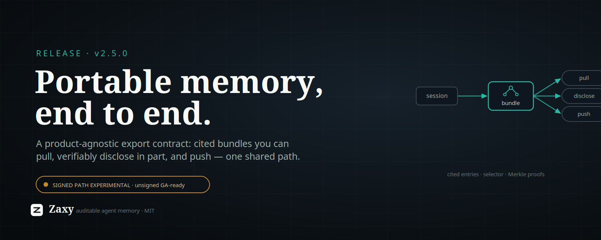

X Article Draft: Zaxy 2.5.0

Zaxy 2.5.0 ships a general memory export contract: a product-agnostic way to pull a session's memory out as a cited, portable bundle that any consumer can verify — and, if you choose, reveal only a slice of, or push to wherever you want. Zaxy never has to know who is asking.
The short version: agent memory is only as useful as it is movable and trustworthy. Most memory is trapped inside a vendor runtime, and even when you can get it out, you usually can't prove what it is or hand over just the relevant part. 2.5 makes export a first-class, specified contract — built so the thing on the other end can be a dashboard, an auditor, another agent, or a "second brain" product, without Zaxy taking a dependency on any of them.
What shipped
A contract in four layers, all converging on one projection path so the bytes are identical no matter which surface you use:
- A canonical entry schema (
zaxy.export.v1). Every exported item is a self-describing JSON entry carrying a sealed Eventloom citation (eventloom://<thread>/events/<seq>#<hash>). Two grains: rawevententries, andsemanticentries (entities and edges) from the deterministic extractor. Provenance is in the format, not bolted on. - A selection contract. An
ExportSelectorpicks what to export — by grain, event type, sequence or time window, a verbatim-query pre-filter, sensitivity redaction, and asincedelta cursor so a consumer can sync only what changed. - Pull surfaces. A
memory_exportMCP tool and a generalizedzaxy exportCLI. A consumer pulls; Zaxy stays the authoritative upstream source. - Verifiable partial disclosure. Hand someone a subset of a signed bundle with Merkle inclusion proofs — they verify those entries belong to the signed set without seeing the rest (
export-disclose/verify-export-subset). - Outbound delivery. Optional file and webhook sinks plus
zaxy export-push, for the cases where you want Zaxy to send a bundle rather than wait to be asked. One-shot by design; cron handles "recurring."
It builds directly on the 2.4 line — the zaxy.portable signed-bundle format (post-quantum ML-DSA-65 signatures, a domain-separated Merkle tree) — and wraps it in the contract that was missing around it.
Why it matters
The interesting problem with agent memory isn't storage; it's a transfer format that is authentic (cited, optionally signed), minimally disclosed (prove a slice, not the whole history), and decoupled (the producer doesn't need to know the consumer). That's the shape a W3C community group and recent "portable agent memory" research are converging on, and Zaxy already had the right substrate: an immutable, hash-chained event log where provenance is the product.
This is deliberately not a step toward Zaxy becoming a "second brain." Zaxy stays auditable agent memory; the export contract is exactly the seam that lets a brain-style product — or anything else — consume Zaxy as a verifiable source, without Zaxy ingesting unverifiable bulk data and diluting what makes it trustworthy.
The honest caveats
- Signing is EXPERIMENTAL and UNAUDITED. The signed-bundle and partial- disclosure paths depend on
zaxy.portable, which is opt-in (pip install zaxy-memory[export]), warns loudly on import, and is pending an independent cryptographic review before any general-availability use. Treat signed export as a preview. The unsigned canonical export carries no such caveat and is usable today. - Keys never travel in band. Over MCP, signing uses a server-configured key only — a private key is never accepted as a tool argument. The CLI and webhook auth read keys/tokens from files, never inline.
- Export is a read of your memory. The
memory_exporttool is admin-gated and session-scoped; redaction and disclosure are there so you ship only what you intend to.
Try it
The contract is specified in docs/export-contract.md — entry schema, selector, the three bundle shapes, both surfaces, and the versioning policy a consumer can pin against.
# Pull an unsigned, cited bundle for a session.
zaxy export --out bundle.json --eventloom-path .eventloom --session-id agent-1
# Reveal only the goal entries, with proofs, from a signed bundle.
zaxy export-disclose bundle.json --grains event --kinds goal.created --out subset.json
zaxy verify-export-subset subset.json --expect-public-key <hex>Memory you can't move is lock-in. Memory you can move but can't verify is a liability. 2.5 is the format in between — and we'd genuinely welcome review of the signed path before anyone leans on it.